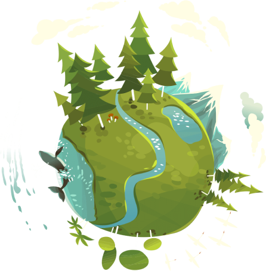

<section class="section-planet planet  _section" id="section-planet">

	<div class="container">
		<div class="row">
			<div class="planet-left">
				<div class="section-title h2">
					Сдавая макулатуру,
					Вы спасаете планету
					<div class="section-title__sub">Спасем планету</div>
				</div>

				<div class="palent-left__text">
					Перерабатывая макулатуру, мы экономим природные ресурсы и сохраняем деревья. Из тонны макулатуры можно
					изготовить <b>25000 тетрадок,</b> кроме того <b>60 кг бумаги,</b> собранной в качестве макулатуры,
					позволяют сохранить <b>1 дерево.</b>
				</div>
				<div class="palent-left__subtext">
					<b>Хотите ли вы спасти планету?</b> Мы готовы посодействовать!
				</div>
				<button class="btn" type="submit">Спасти планету</button>
			</div>
			<!-- /.planet-left -->

			<div class="planet-right">
				<div class="planet-right__img">
					
				</div>
			</div>
			<!-- /.planet-right -->
		</div>
		<!-- /.row -->
	</div>
	<!-- /.container -->
</section>
<!-- /.section-planet -->